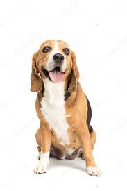

Clasificacion : Grupo "6" - Perros tipos sabuesos

Descripcion ; Estos perros robustos y atrevidos son afables, además de compactos y atléticos. Tienen un pelaje corto, denso, resistente a las inclemencias del clima y se presenta en varios colores y patrones. (Para más información, consulta el estándar de la raza). Miden de 33 a 40 cm y pesan de 10 o 11 kgEstos perros robustos y atrevidos son afables, además de compactos y atléticos. Tienen un pelaje corto, denso, resistente a las inclemencias del clima y se presenta en varios colores y patrones. (Para más información, consulta el estándar de la raza). Miden de 33 a 40 cm y pesan de 10 o 11 kg